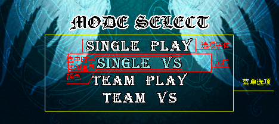
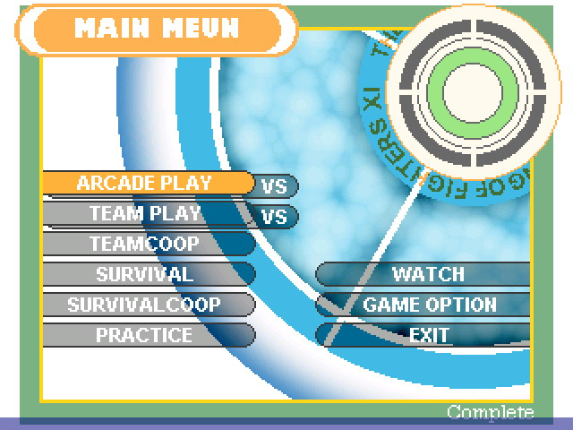
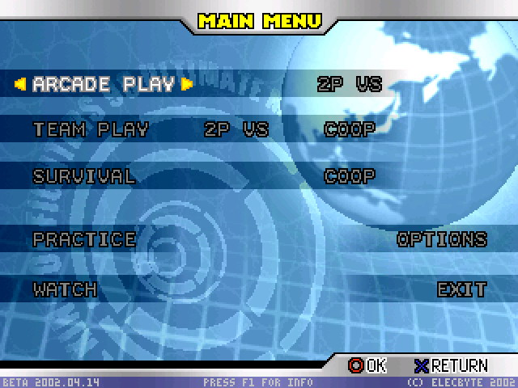

System(画面包等)相关参数设置
; 定义系统画面
; 具体的格式类似背景定义.
; 关于字体的注意事项:
; - [Files]章节最多能指定10个字体
; - 这里的字体索引不是指的fight.def中的
; - 按下面的顺序搜索字体:
; 1. 系统目录
; 2. mugen程序目录(不建议把字体放在这里)
; 3. data/ (不建议把字体放在这里)
; 4. font/
;----------------------------
[Info]
name = "Default" ;主题的名称
author = "Elecbyte" ;主题作者名
versiondate = 09,01,2009 ;主题版本日期 (MM-DD-YYYY) (MUGEN 2009 新增)
mugenversion = 1.0 ;适用的mugen版本号 (MUGEN 2009 新增)
localcoord = 320,240 ;局部坐标空间的宽高 (MUGEN 2009 新增)
;----------------------------
;路径检测顺序:
;1. system.def所在的当前路径
;2. data/
;3. 你MUGEN路径
[Files]
spr = system.sff ;图片数据名称
snd = system.snd ;声音数据名称
logo.storyboard = ;标志剧情介绍 (可选)
intro.storyboard = ;开场剧情定义 (可选)
select = select.def ;人物,舞台选择列表
fight = fight.def ;fight(血条,能量条等)定义
font1 = f-4x6.def ;系统字体
font2 = f-6x9.def ;系统字体
font3 = jg.fnt ;系统字体
;----------------------------
[Music]
;把MOD,MP3,MIDI文件的文件名放置在这里,或者如果你没有声音就空着
;如果给出一个不存在的文件名,则不会播放声音
;要从sound/路径播放mymusic.mp3,写上:
; title.bgm = sound/mymusic.mp3
;如果文件名相同则声音将持续在屏幕中播放,且同时背景音乐被设置为循环播放
;在标题画面中播放的音乐.
;loop-循环,loopstart-循环开始的时间,loopend-循环结束的时间
title.bgm =
title.bgm.volume = 100 ;调节音量,默认100
title.bgm.loop = 1 ;声音是否循环
title.bgm.loopstart =
title.bgm.loopend =
;人物选择画面音乐
select.bgm =
select.bgm.volume =
select.bgm.loop = 1
select.bgm.loopstart =
select.bgm.loopend =
;VS画面音乐
vs.bgm =
vs.bgm.volume =
vs.bgm.loop = 0
vs.bgm.loopstart =
vs.bgm.loopend =
;胜利画面音乐
victory.bgm =
victory.bgm.volume =
victory.bgm.loop = 0
victory.bgm.loopstart =
victory.bgm.loopend =
;-------------------------------------------------------------------
;标题画面定义(模式选项画面)
[Title Info]
fadein.time = 10 ;画面淡入时间,设置一个透明渐变过渡,刚进入标题画面时画面从全黑渐渐变为标题画面.(貌似对字体无效)
fadeout.time = 10 ; 画面淡出时间,选择完模式后标题画面变为全黑.
menu.pos = 159,158 ;选项菜单的位置(屏幕左上角为0,0)
menu.item.font = 3,0,0 ;选项菜单字体(第1组数字是要调用的字体编号,第3组数字为对齐方式,0-居中对齐,1-左对齐,-1-右对齐)
menu.item.active.font = 3,5,0, 150,240,240 ;当光标放在这个选项上时的字体,后3组为指定字体遮罩颜色RGB数值.
menu.item.spacing = 0, 13 ;每个选项纵向间距
;菜单中每个选项的名称.名字必须在引号中.要禁用某个选项,使用"".如果所有选项都禁止,直接进入demo(观看)模式.(按Esc可以退出demo模式)
menu.itemname.arcade = "ARCADE"
menu.itemname.versus = "VS MODE"
menu.itemname.teamarcade = "TEAM ARCADE"
menu.itemname.teamversus = "TEAM VS"
menu.itemname.teamcoop = "TEAM CO-OP"
menu.itemname.survival = "SURVIVAL"
menu.itemname.survivalcoop = "SURVIVAL CO-OP"
menu.itemname.training = "TRAINING"
menu.itemname.watch = "WATCH"
menu.itemname.options = "OPTIONS"
menu.itemname.exit = "EXIT"
;定义选项菜单可见性
menu.window.margins.y = 12, 8 ;定义选项菜单上方的可见范围
menu.window.visibleitems = 5 ;总共有多少项设置为可见
menu.boxcursor.visible = 1 ;设置选项光标是否可见，1为显示，0反之.
menu.boxcursor.coords = -120,-27,120,2;设置选项光标位置大小. 是由4个点组成的矩形.
; 选项中的声音
cursor.move.snd = 100,0 ;移动光标的声音
cursor.done.snd = 100,1 ;确认选项的声音(光标选中的声音)
cancel.snd = 100,2 ;退出的声音(返回主界面时的声音)

;传统字体的概念即为定义字符,其实mugen的字体严格上来说不叫字体,更确切的说法其实是图像,字体中其实是通过定义图像上的某一部分区域来表示一个字母的.
;所以可以利用字体图像的特征结合菜单选项做出非传统mugen的选单效果.
;例如:设置
;menu.itemname.arcade = "A"
;menu.itemname.versus = "B"
;然后可以将字体绘制成图像模式,将字体A和B的区域定义成不同图像来实现特殊效果.


;此种方式应用很广泛,在背景预览,血条,能量条上都有用到.
;----------------------------
;标题背景定义
;除上述设置外的其他元素都要定义在这里(具体说明详见背景教程)
[TitleBGdef]
bgclearcolor = 0,0,0
[TitleBG 0]
type = parallax
spriteno = 5, 1
start = 0, 145
width = 400, 1200
yscalestart = 100
yscaledelta = 1
tile = 1,1
velocity = -1
[TitleBG 1]
type = normal
spriteno = 5, 2
start = -160, 145
trans = sub
[TitleBG 2]
type = normal
spriteno = 5,0
start = 0, 10
tile = 1,2
velocity = -1
mask = 0
[TitleBG 3]
type = normal
spriteno = 0,0
start = 0, 40
mask = 1
trans = add
;-------------------------------------------------------------------
;选人画面定义
[Select Info]
fadein.time = 10 ;淡入时间
fadeout.time = 10 ;淡出时间
; *** 注意 ***
; 你想增加更多的行和列吗
; 在 MUGEN 1.0, 默认画面包定义是在 data/mugen1/system.def.
; 你同时可以编辑 mugen.cfg 来选择"big"主题.
;注:大多数时候可以对图像素材(图片或者动画)进行缩放,例如:p1.cursor.done.spr =,则缩放的语句为p1.cursor.done.scale =
;除非有说明,否则使用图片的地方也可以使用动画,即p1.cursor.active.spr =也可以使用p1.cursor.active.anim =
;大多数时候,可以从最后一组字符串中猜到具体含义.
;spr-图像,anim-动画,offset-位置偏移量,snd-声音,font-字体,scale-缩放,facing-朝向,text-文字,spacing-间距,layerno-层号,time-时间
;总之就这么多花样,要注意的地方会另外注明.
rows = 2 ;设置行数和列数,都从0开始
columns = 5
wrapping = 0 ;设置1,使得光标移到最右边时,再按一次右就能回到最左边
pos = 90,170 ;第一个选人格子的起始位置
showemptyboxes = 0 ;是否显示空的格子
moveoveremptyboxes = 0 ;是否可以移动到空的格子上
cell.size = 27,27 ;每个选人框的x,y大小(像素).
cell.spacing = 2 ;选人框间距
cell.bg.spr = 150,0 ;选人框的图片.(不要使用动画)
cell.random.spr = 151,0 ;随机图标(不要使用动画)
cell.random.switchtime = 4;随机选择时变化的频率(时间帧数)
p1.cursor.startcell = 0,0 ;p1起始选人光标停留在选人框什么位置
p1.cursor.active.spr = 160,0 ;p1选人光标的图片(可使用动画即p1.cursor.active.anim = )
p1.cursor.done.spr = 161,0 ;p1光标选定时的图片
p1.cursor.move.snd = 100,0 ;p1光标移动时的声音
p1.cursor.done.snd = 100,1 ;p1光标选定时的声音
p1.random.move.snd = 100,0 ;p1随机选择的声音
p2.cursor.startcell = 0,4 ;同p1
p2.cursor.active.spr = 170,0
p2.cursor.done.spr = 171,0
p2.cursor.blink = 1 ;若p1光标和p2重叠是否闪烁
p2.cursor.move.snd = 100,0
p2.cursor.done.snd = 100,1
p2.random.move.snd = 100,0
random.move.snd.cancel = 0;设置1,随机声音反复播放时取消
stage.move.snd = 100,0 ;选舞台时,移动的声音
stage.done.snd = 100,1 ;选舞台时,选定时的声音
cancel.snd = 100,2 ;取消的声音
portrait.spr = 9000,0 ;选人格中小头像的图片(9000,0不要改)
portrait.offset = 0,0 ;选人格中小头像的位置(相对于选人格子)
portrait.scale = 1,1 ;缩放
title.offset = 159,13 ;指定此模式的标题位置
title.font = 3,0,0 ;标题字体
;
;大头像
p1.face.spr = 9000,1 ;9000,1不要改
p1.face.offset = 18,13 ;位置
p1.face.scale = 1,1
p1.face.facing = 1 ;朝向
p2.face.spr = 9000,1
p2.face.offset = 301,13
p2.face.scale = 1,1
p2.face.facing = -1
;名字
p1.name.offset = 10,162 ;名字的位置
p1.name.font = 3,4,1 ;-1不显示
p1.name.spacing = 0,-27 ;名字间距,旧版本貌似不能设置
p2.name.offset = 309,162
p2.name.font = 3,1,-1
p2.name.spacing = 0,-27
;舞台选择
stage.pos = 160,237
stage.active.font = 3,0,0
stage.active2.font = 3,2
stage.done.font = 3,0
;队伍菜单(此部分用图示)
teammenu.move.wrapping = 1
p1.teammenu.pos = 20, 30
;p1.teammenu.bg.spr = ;team菜单背景框
p1.teammenu.selftitle.font = 3,0, 1
p1.teammenu.selftitle.text = Select team mode
p1.teammenu.enemytitle.font = 3,0, 1
p1.teammenu.enemytitle.text = Opponent team mode
p1.teammenu.move.snd = 100,0
p1.teammenu.value.snd = 100,0
p1.teammenu.done.snd = 100,1
p1.teammenu.item.offset = 0,20
p1.teammenu.item.spacing = 0,15
p1.teammenu.item.font = 3,0, 1
p1.teammenu.item.active.font = 3,3, 1
p1.teammenu.item.active2.font = 3,0, 1 ;闪烁时第2种字体
p1.teammenu.item.cursor.offset = -10, 0 ;光标
p1.teammenu.item.cursor.anim = 180
p1.teammenu.value.icon.offset = 60,1
p1.teammenu.value.icon.spr = 181,0
p1.teammenu.value.empty.icon.offset = 60,1
p1.teammenu.value.empty.icon.spr = 182,0
p1.teammenu.value.spacing = 6,0
;p2 team
p2.teammenu.pos = 299, 30
;p2.teammenu.bg.spr =
p2.teammenu.selftitle.font = 3,0, -1
p2.teammenu.selftitle.text = Select team mode
p2.teammenu.enemytitle.font = 3,0, -1
p2.teammenu.enemytitle.text = Opponent team mode
p2.teammenu.move.snd = 100,0
p2.teammenu.value.snd = 100,0
p2.teammenu.done.snd = 100,1
p2.teammenu.item.offset = 0,20
p2.teammenu.item.spacing = 0,15
p2.teammenu.item.font = 3,0, -1
p2.teammenu.item.active.font = 3,1, -1
p2.teammenu.item.active2.font = 3,0, -1
p2.teammenu.item.cursor.offset = 10, 0
p2.teammenu.item.cursor.anim = 190
p2.teammenu.value.icon.offset = -60,1
p2.teammenu.value.icon.spr = 191,0
p2.teammenu.value.empty.icon.offset = -60,1
p2.teammenu.value.empty.icon.spr = 192,0
p2.teammenu.value.spacing = -6,0
;
[Begin Action 180] ;P1 Team mode cursor
180,0, 0,0, 1
180,0, 1,0, 1
180,0, 2,0, 1
180,0, 3,0, 1
180,0, 4,0, 1
180,0, 5,0, 1
180,0, 6,0, 1
180,0, 7,0, 1
[Begin Action 190] ;P2 Team mode cursor
190,0, 0,0, 1
190,0,-1,0, 1
190,0,-2,0, 1
190,0,-3,0, 1
190,0,-4,0, 1
190,0,-5,0, 1
190,0,-6,0, 1
190,0,-7,0, 1
;-----------------------
;定义选人画面背景元素
[SelectBGdef]
;spr = graphics/selectbg.sff ;Filename of sprite data
[SelectBG 0] ;Scrolling background
type = normal
spriteno = 100,0
layerno = 0
start = 0,0
tile = 1,1
velocity = -1, -1
[SelectBG 1] ;Dark box
type = normal
spriteno = 100,1
layerno = 0
start = 0, 166
delta = 0,0
tile = 1,0
trans = sub
window = 85,0, 235,239
velocity = -1, 0
[SelectBG 2.A] ;Title background
type = normal
spriteno = 102,0
layerno = 0
start = 0, 2
delta = 0,0
tile = 1,0
trans = sub
velocity = -1, 0
[SelectBG 2.B] ;Title background B
type = normal
spriteno = 102,1
layerno = 0
start = 0, 2
delta = 0,0
tile = 1,0
trans = add
velocity = -3, 0
[SelectBG 2.C] ;Title background C
type = normal
spriteno = 102,2
layerno = 0
start = 0, 2
delta = 0,0
tile = 1,0
trans = add
velocity = -6, 0
;-------------------------------------------------------------------
[VS Screen]
time = 150 ;显示的时间
fadein.time = 15
fadeout.time = 15
;arcade模式中的文字
match.text = "Match %i" ;%i表示局数
match.offset = 159, 12
match.font = 3,0,0
;大头像
p1.spr = 9000, 1
p1.offset = 20,31
p1.facing = 1
p1.scale = 1,1
p2.spr = 9000, 1
p2.offset = 299,31
p2.facing = -1
p2.scale = 1,1
;名字
p1.name.offset = 78,190
p1.name.font = 3,0,0
p2.name.offset = 241,190
p2.name.font = 3,0,0
;-----------------------
;VS背景定义
[VersusBGdef]
[VersusBG 1]
type = normal
spriteno = 100,0
start = 0,0
tile = 1,1
velocity = 0,1.5
[VersusBG 2] ;VS Screen
type = normal
spriteno = 100,1
start = 20,13
tile = 1,1
trans = sub
window = 19,30, 140,171
velocity = -2, 0
[VersusBG 3] ;VS Screen
type = normal
spriteno = 100,1
start = 20,13
tile = 1,1
trans = sub
window = 179,30, 300,171
velocity = 2, 0
[VersusBG 4] ;VS Logo
type = anim
actionno = 200
layerno = 1 ; Front
start = 0,95
[Begin Action 200]
200,4, 0,0, 1
200,3, 0,0, 2
200,2, 0,0, 3
200,1, 0,0, 4
200,0, 0,0, 8
200,5, 0,0, 3
200,6, 0,0, 3
200,7, 0,0, 3
200,8, 0,0, 3
200,0, 0,0, -1
;-------------------------------------------------------------------
;Demo模式定义
[Demo Mode]
enabled = 1 ;设置0禁用Demo
select.enabled = 0 ;设置1在demo里面显示选人画面
vsscreen.enabled = 0 ;设置1在demo里面显示VS画面
title.waittime = 600 ;设置title画面显示多久(也就是进入游戏后什么都不按)后进入demo
fight.endtime = 1500 ;demo里电脑打多久
fight.playbgm = 0 ;demo中对战时是否播放BGM
fight.stopbgm = 1 ;是否禁止title的BGM(仅当playbgm = 0)
fight.bars.display = 0 ;是否显示血条
intro.waitcycles = 1 ;过场动画再次播放前是否等待
debuginfo = 0 ;debug模式中是否隐藏debug信息
;-------------------------------------------------------------------
;续关画面定义
[Continue Screen]
enabled = 1 ;是否禁用
;-------------------------------------------------------------------
;Game over画面定义
[Game Over Screen]
enabled = 0 ;是否禁用
storyboard = ;如有情节,设置SFF名称
;-------------------------------------------------------------------
;胜利者画面定义
;arcade模式获胜一场后显示
;不是显示在arcade模式最后一场获胜后
[Victory Screen]
enabled = 1
time = 300 ;持续时间
fadein.time = 8
fadeout.time = 15
;胜利者的头像和名字
p1.offset = 100,20
p1.spr = 9000,2
p1.facing = 1
p1.scale = 1,1
p1.window = 0,0, 319,160
p1.name.offset = 20,180
p1.name.font = 3,0,1
;胜利后的文字
winquote.text = "Winner!" ;默认就是这个
winquote.offset = 20,192
winquote.font = 2,0,1
winquote.window = 18,171, 301,228
winquote.textwrap = w ;自动换行
;-----------------------
;Victory screen background
[VictoryBGdef]
[VictoryBG 1]
type = normal
spriteno = 100,0
start = 0,0
tile = 1,1
velocity = 0,1.5
[VictoryBG 2]
type = normal
spriteno = 100,1
start = 20,13
tile = 1,1
trans = sub
window = 0,19, 319,160
velocity = -2, 0
[VictoryBG 3]
type = normal
spriteno = 100,1
start = 10,170
tile = 1,1
trans = sub
window = 15,170, 304,229
velocity = 0, 0
;-------------------------------------------------------------------
;胜利画面定义
;arc模式获胜后显示
;如果你有剧情ending就不会显示
[Win Screen]
enabled = 1 ;是否禁用
wintext.text = "Congratulations!"
wintext.font = 2,0,0
wintext.offset = 159,70
wintext.displaytime = -1
wintext.layerno = 2
fadein.time = 32
pose.time = 300
fadeout.time = 64
;-------------------------------------------------------------------
;Game ending画面定义
;Win Screen后显示
;如果你有剧情ending就不会显示
[Default Ending]
enabled = 0 ;是否显示
storyboard = ;默认的剧情ending名字
;-------------------------------------------------------------------
;片尾字幕定义
;Win Screen和Ending之后显示
[End Credits]
enabled = 0 ;是否禁用
storyboard = ;文件名
;-------------------------------------------------------------------
;Survival模式结果画面
;生存模式胜利后显示
;有剧情ending的人物不会显示
[Survival Results Screen]
enabled = 1
winstext.text = "Rounds survived: %i" ;%i 胜利局数
winstext.font = 3,0,0
winstext.offset = 159,70
winstext.displaytime = -1
winstext.layerno = 2
fadein.time = 32
show.time = 300
fadeout.time = 64
roundstowin = 5
;-------------------------------------------------------------------
;Options画面定义
[Option Info]
cursor.move.snd = 100,0
cursor.done.snd = 100,1
cancel.snd = 100,2
;-------------------
;Options screen background
[OptionBGdef]
[OptionBG 1]
type = normal
spriteno = 100,0
start = 0,0
tile = 1,1
velocity = -1, -1